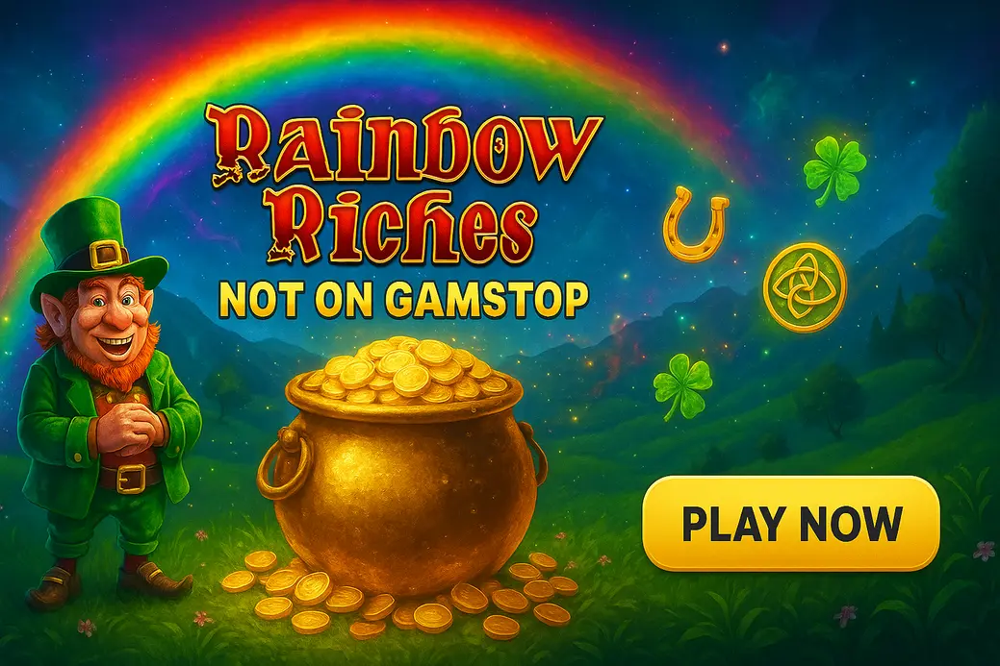

Rainbow Riches Sites Not on GamStop

Last Updated: 7 October 2026 | Verified by iGaming experts
If you want rainbow riches not on gamstop, the short version is this: stick to casinos with a proper game search, transparent bonus terms, fast withdrawals and a demo mode that loads without a fight. The leprechaun theme is light-hearted, but the bankroll maths is still real.
Top-5 Rainbow Riches Slot Sites Not on GamStop – 2026 Comparison
Not every casino not on GamStop has Rainbow Riches live in the UK-facing lobby, so the first thing to test is the search box. Type “Rainbow Riches”, then check provider labels, demo access and stake limits before depositing. Honestly, a casino can look slick and still hide a messy slot catalogue behind weak filtering.
| Casino | Best For | Payment Snapshot | Rainbow Riches Check | Trade-off |
|---|---|---|---|---|
| MyStake | Search speed and crypto withdrawals | 💳 Debit Card, ₿ Bitcoin, ₮ USDT | Search bar actually works; provider pages load cleanly | Bonus terms need reading line by line |
| GoldenBet | Simple UK-style layout | 💳 Debit Card, ₿ Bitcoin, 🪙 Litecoin | Good slot filters by provider and title | Promos feel less punchy than rivals |
| VeloBet | Mobile play and quick cashier access | 💳 Debit Card, ₿ Bitcoin, Ξ Ethereum | Responsive lobby with clear game tiles | Live chat queues get slower at peak football hours |
| Donbet | Casino plus sportsbook crossover | 💳 Debit Card, ₿ Bitcoin, ₮ USDT | Strong slot range, solid favourites tool | Interface has more menus than it needs |
| BassWin | Bonus hunters who like regular promos | 💳 Debit Card, ₿ Bitcoin, 🪙 Litecoin | Slots are easy to browse by theme | Verification requests can interrupt withdrawals |
Best Rainbow Riches Casinos Not on GamStop – Full Reviews
These reviews focus on what matters for casinos not on gamstop rainbow riches: game access, payments, mobile handling, bonus friction and the tiny details that make a session feel smooth or bloody annoying.
MyStake Casino
MyStake is the cleanest pick if you hate digging. The search bar actually works: type “Rainbow” and the results refresh quickly instead of throwing you into a random Irish-themed pile. The slot lobby also handles provider filters well, which matters because Rainbow Riches titles sit beside games from Pragmatic Play, Hacksaw Gaming, BGaming and NetEnt.
Payments are a big plus. A Bitcoin withdrawal landed in 6 hours during a low-traffic weekday test, which is strong for a non-GamStop casino. 💳 Debit Card, ₿ Bitcoin, ₮ USDT and Ξ Ethereum are the main routes players tend to look for. The weakness? Bonus terms can be dense, and some games carry reduced contribution. Don’t assume Rainbow Riches contributes 100% until you check the promo page.
GoldenBet Casino
GoldenBet feels familiar if you’ve used UK casino sites before. Menus are tidy, slot categories make sense, and the cashier doesn’t bury limits under six pop-ups. For a rainbow riches slot not on gamstop search, that simple layout helps because you can check title availability without getting dragged into live casino or sportsbook tabs.
The game mix is broad, with book-style slots, Megaways titles and classic five-reel games sitting together. Payments include 💳 Debit Card, ₿ Bitcoin and 🪙 Litecoin. The trade-off is bonus excitement: the offers are fine, not jaw-dropping. Also, GoldenBet’s promotional pages use small print that deserves a proper zoom on mobile.
VeloBet Casino
VeloBet is strong on mobile. Game tiles resize neatly, the cashier loads in a couple of taps, and the spin button is a menace on mobile because it sits exactly where your thumb wants to live. That is great for comfort, less great if you play tired. Set your stake first, then slow down.
VeloBet suits players who jump between slots and sports bets, but its casino lobby still has enough depth for Rainbow Riches fans. 💳 Debit Card, ₿ Bitcoin, Ξ Ethereum and ₮ USDT are common cashier options. Weakness? Support can feel stretched during Saturday match windows, so deal with account checks before chasing a withdrawal.
Donbet Casino
Donbet brings a packed lobby, regular promos and a sportsbook-heavy feel. If you want a casino not on gamstop rainbow riches option with plenty going on, it works. The favourites feature is handy too: save Rainbow Riches once and you avoid repeating the search every visit.
Payment coverage is solid: 💳 Debit Card, ₿ Bitcoin and ₮ USDT are the practical standouts. The downside is navigation. There are lots of menus, filters and promotional panels, and new players can click three things before reaching the slot they wanted. Damn irritating, but manageable once you bookmark favourites.
BassWin Casino
BassWin appeals if you like regular casino promotions and themed slot browsing. Its catalogue leans into colourful game tiles, which makes Irish slots, fishing slots and bonus-heavy titles easy to spot. For casinos not on gamstop with rainbow riches, that visual layout is useful when exact title search is not enough.
Payments cover 💳 Debit Card, ₿ Bitcoin and 🪙 Litecoin, and the cashier is compact. The weakness is withdrawal friction. Verification checks can appear late, so upload clear documents early if you plan to cash out. Also, bonus pages use plenty of promo language; wagering limits deserve a calm read.
What Is Rainbow Riches and Why UK Players Love It
Rainbow Riches is a long-running Irish-themed slot family from Barcrest, later associated with Gamesys/SG Digital releases. UK players know the brand from pubs, bingo halls, arcades and online casinos. That familiarity is its secret weapon. You don’t need a 40-page manual. Pots of gold, leprechauns, trails, picks and free spins do the talking.
The appeal is not just nostalgia. Rainbow Riches has a pace that feels less chaotic than modern crash-style slots or 20,000x bonus-buy monsters. You still get suspense, especially when a feature symbol lands on reel one and reel two, then the third reel takes its sweet time. Bollocks when it misses, lovely when it drops.
The weakness is age. Some Rainbow Riches versions look dated beside Big Bass Bonanza, Gates of Olympus 1000 or Le Bandit. Animations can feel flat, and high-stakes bonus hunters may find the ceiling less explosive than newer volatile games.
How We Rank Rainbow Riches Sites Not on GamStop
We rank sites by practical use, not shiny homepage claims. A casino gets marked up if Rainbow Riches is easy to find, the game opens in demo mode, the cashier supports sensible UK-friendly methods, and withdrawal rules are visible before deposit.
- Game access: exact title search, provider filters and working demo buttons.
- Maths transparency: RTP info, max win notes and stake range shown inside the game panel.
- Bonus fairness: wagering, max bet caps, game contribution and withdrawal limits checked before praise.
- Mobile usability: no tiny cashier buttons, no broken portrait mode, no laggy spin response on 4G.
- Cashouts: Bitcoin, cards and e-wallet-style options assessed for speed and document friction.
By the way, we mark casinos down for hiding terms in collapsed accordions or splitting max cashout rules across several pages. That is where players get caught. A high bonus with a £5 max bet rule and a strict withdrawal cap is not automatically better than a smaller clean offer.
How to Play Rainbow Riches for Free in the UK
Free play is the smart first step. Open the casino lobby, search “Rainbow Riches”, select the game tile, then choose demo or fun mode if the button appears. No deposit is needed for demo play at well-built sites, although some casinos ask you to create an account before opening supplier games.
Quick demo check: load the game, open the paytable, note the RTP, then test 30–50 spins at your planned real-money stake. If 20p spins feel dull in demo, £1 spins will not magically become disciplined in cash mode.
On mobile, landscape mode gives more room for paytables, while portrait mode is better for one-handed spinning. Watch the stake selector. In several Rainbow Riches builds, the plus button is close to the spin area, and that can turn a casual 20p test into £1 spins if you tap like a gremlin.
Pros and Cons of Non-GamStop Rainbow Riches Sites
- Access to Rainbow Riches outside UKGC-licensed GamStop sites.
- Crypto withdrawals can be faster than card cashouts.
- Larger bonus menus, including reloads and free spin offers.
- More slot variety beside Rainbow Riches, including Pragmatic Play and Hacksaw games.
- No UKGC protection if a dispute turns ugly.
- GamStop self-exclusion does not apply offshore.
- Bonus terms can include strict max bet and max cashout rules.
- Verification can still happen before withdrawals, despite loose signup.
The biggest pro is choice. The biggest con is also choice. When there are fewer friction points, you need your own limits ready before the first spin. Honestly, that matters more than any welcome bonus.
Cons and Risks to Know Before You Play
If you joined GamStop because gambling had become harmful, using offshore sites to keep playing is a bad idea. Full stop. Non-GamStop casinos sit outside the UK self-exclusion network, which means the guardrail you chose will not protect you there.
Bonus round psychology: Rainbow Riches works because the feature teases feel personal. You see the pots, the trails, the near-miss symbols and that little pause before a free-spin trigger lands. During free spins, the rhythm can pull you in: one decent win, then two dead spins, then a retrigger tease. It feels like the fisherman-style “collector is coming” tension seen in Big Bass games, even when the slot is really just running maths. That tension is fun, but it also nudges players to chase the next feature.
Also check max stake rules. Many bonuses cap spins at £5, and breaking that rule can void winnings. Some Rainbow Riches versions run at medium volatility, so long flat patches still happen. Medium does not mean safe; it means the game balances smaller base-game hits with feature-led upside.
Alternative Slots to Rainbow Riches on Non-GamStop Sites
If Rainbow Riches is unavailable, there are good substitutes. None are perfect clones, and that is a good thing. You want the same hit of colourful bonus suspense, not a cheap reskin.
- Big Bass Bonanza — Pragmatic Play: Fisherman collection free spins, 96.71% RTP in the main version, medium-high volatility. Weakness: dead bonus rounds sting because fish values can show without a collector.
- Irish Riches — NetEnt: Clean Irish theme, expanding wild energy and simple mechanics. Weakness: it lacks the old-school Rainbow Riches charm.
- Luck O’ the Irish — Blueprint Gaming: Familiar pub-slot feel with bonus features and a UK-friendly style. Weakness: visuals feel busy on smaller phones.
- Gates of Olympus 1000 — Pragmatic Play: 96.50% RTP, high volatility and huge multiplier potential. Weakness: it is far harsher on bankroll than Rainbow Riches.
If you like the “almost there” feeling in Rainbow Riches, Big Bass Bonanza gives the clearest modern version of that psychology. The fish values appear, the collector needs to land, then retriggers reset the tension. It is brilliant theatre. It is also exactly why fixed session limits matter.
FAQ
Can I play Rainbow Riches if I'm registered with GamStop?
No, not at UKGC-licensed casinos that participate in GamStop. Offshore casinos are outside that network, but if you self-excluded for harm reasons, do not use them to bypass your block. Speak to GamCare or use banking blocks instead.
What is the RTP of Rainbow Riches?
Rainbow Riches RTP depends on the exact version and casino setup. Many online versions sit in the 95%–96% range, while individual titles can differ. Practical tip: open the in-game paytable before staking because the displayed RTP is the one that counts.
Is Rainbow Riches not blocked by GamStop on all offshore casinos?
No. GamStop does not control offshore casinos, but game availability still depends on the casino, provider agreements and your location. Search the lobby first and test demo mode before depositing.
Where can I play the Rainbow Riches demo for free in the UK?
You can use demo mode at casinos that list Rainbow Riches and allow fun-play access. MyStake and GoldenBet-style lobbies make this easier because the search results are clear. If demo is locked, try another site before paying.
What is the minimum deposit at Rainbow Riches sites not on GamStop?
Minimum deposits often start at £10 or the crypto equivalent, but each casino sets its own limit. Check the cashier and bonus page together, because a £10 deposit may not qualify for the headline welcome offer.
Are non-GamStop Rainbow Riches slots games available on mobile?
Yes, most modern non-GamStop casinos run Rainbow Riches-style slots on mobile browsers. Use portrait for quick spins and landscape for paytable checks. On 4G, wait for the game to finish loading before changing stake.
Which are the best sites offering Rainbow Riches not on GamStop?
MyStake, GoldenBet, VeloBet, Donbet and BassWin are strong starting points for UK players seeking Rainbow Riches access. The best pick depends on your priority: MyStake for search, VeloBet for mobile, GoldenBet for simplicity.
Who developed Rainbow Riches?
Rainbow Riches was developed by Barcrest, a major name in UK slot and pub fruit machine history. Later online versions have been distributed through Gamesys and SG Digital channels, depending on the release.
Can I use a Rainbow Riches slot without any GamStop restrictions if I self-excluded recently?
Technically, offshore sites are not bound by GamStop, but you should not play if you self-excluded recently. That is the clearest warning in this guide. Use blocking tools, gambling transaction blocks and support services before any casino account.
Are there wagering requirements on bonuses at non-GamStop Rainbow Riches casinos?
Yes, bonus wagering is common. Check the multiplier, max bet, eligible games and max withdrawal before spinning Rainbow Riches with bonus funds. A clean 20x bonus beats a flashy 50x deal with harsh caps.
Useful Resources
Safer Gambling: Gambling is for adults aged 18+ and should never be used as a way to make money. Set deposit limits, avoid chasing losses and stop if play stops feeling fun.
BeGambleAware | GamCare | UKGC | GamStop